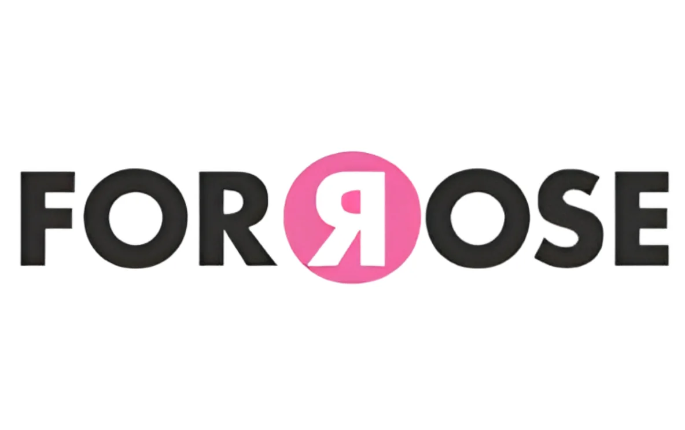
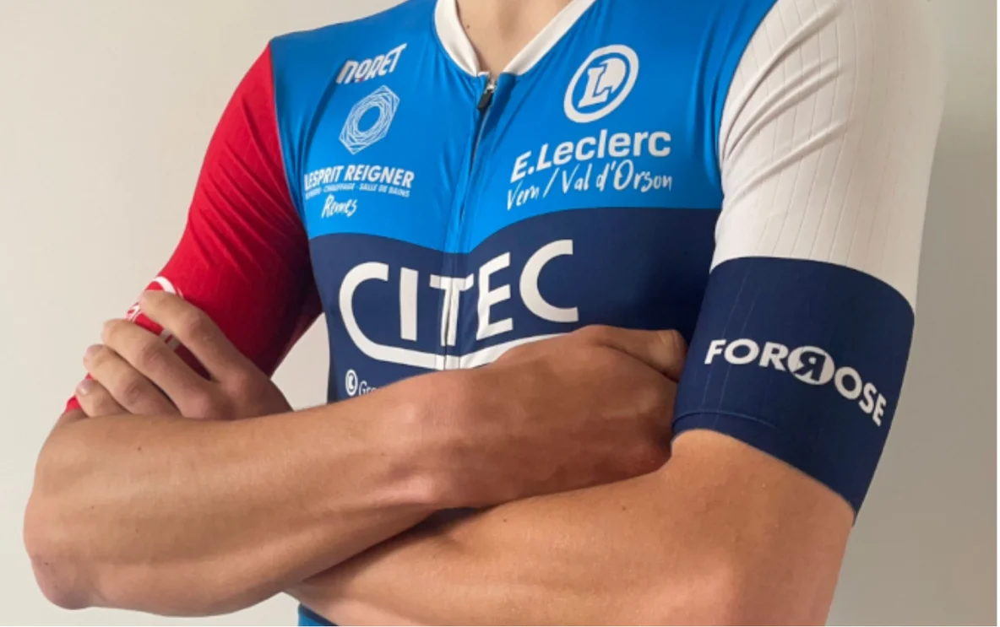

L’US Vern Cyclisme s'engage avec fierté aux côtés de l’association ForRose.
ForRose mène des actions solidaires et organise des événements sportifs et culturels pour la bonne cause. Les fonds récoltés sont reversés aux services pédiatriques de différents hôpitaux en France, ou à des associations qui apportent du réconfort aux enfants hospitalisés et à leurs familles.

